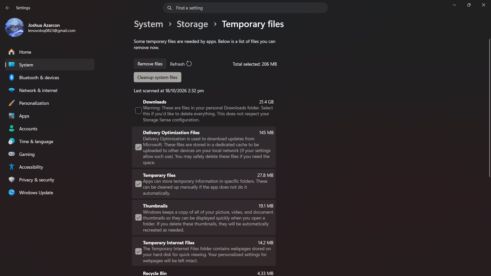

Software Problems
3 Clear the app's cache.
Use the affected app's own settings to clear cached data.

Do not delete unfamiliar files, personal files, or app data.
What to check:
- Use the app’s own settings to clear its cache.
- Do not delete unfamiliar folders or personal files.
- Sign in again only if you know your credentials.